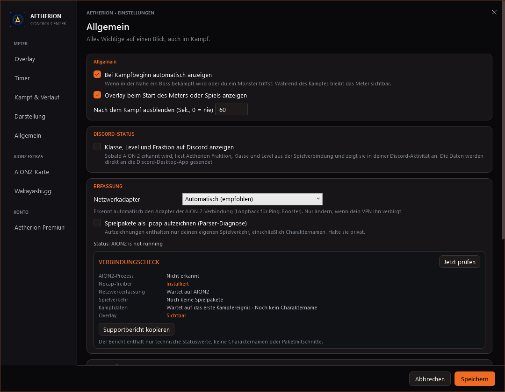

Klarer im Kampf. Lesbar bei Transparenz.
Verbesserungen für Kampfzentrum, Rangliste und In-Game-Overlay.
Startansicht · Raid Command
Suche, Klassenfilter und Sortierung stehen getrennt unter dem Titel. Das Ansichtsmenü schaltet Kennzahlen, Kampfverlauf und Team-Status frei.

Overlay · abgestimmt auf das Kampfzentrum
Anthrazit, Glut-Orange und Silber bilden die gemeinsame Palette. Das Vorschaubild nutzt einen warmen, dunklen Spielhintergrund statt des zuvor grünlichen Platzhalters. Die Overlay-Flächen bleiben einstellbar transparent; die Bedienleiste bleibt gut lesbar.

Verbindungscheck · Probleme schneller finden
In den Einstellungen werden Spielprozess, Npcap, Erfassung, Paketfluss, Kampfdaten und Overlay geprüft. Der Supportbericht kopiert nur technische Statuswerte.


Was neu ist
Spielernamen suchen, nach Klasse filtern sowie DPS/HPS, Gesamtwert, Burst, Namen oder Klassen ordnen.
Der aktive Modus ist farblich hervorgehoben; die Spaltenüberschrift wechselt passend zwischen DPS und HPS.
Kennzahlen, Kampfverlauf und Team-Status sind einzeln ein- und ausblendbar. Die rechte Spalte passt sich an.
Die App zeigt, ob sie auf AION2 oder Kampfdaten wartet, einen Kampf erfasst oder eine Zusammenfassung anzeigt.
Nach Ende erscheinen Spieleranzahl, Gesamtschaden und Kampfzeit direkt im Kampfstatus.
Die Bedienelemente erscheinen in einer dunklen Leiste und bleiben auch bei 0 % Hintergrunddeckkraft gut erkennbar.
Prüft AION2, Npcap, Erfassung, Paketfluss, Kampfdaten und Overlay. Ein Supportbericht kopiert nur technische Statuswerte – keine Spielernamen oder Mitschnitte.
Fehlerbehebungen und weitere enthaltene Änderungen
- Der Boss-Lebensbalken ist aufgeräumt: HP-Zahl und Prozent stehen oberhalb der separaten, schmalen Füllleiste.
- Bei leerer Rangliste wird erklärt, ob noch keine Kampfdaten eingetroffen sind oder der aktuelle Filter keine Spieler findet.
- Das Aetherion-Schwarz-/Glut-Orange-/Silber-Branding mit saisonalem Emblem zieht sich durch Kampfzentrum, Timer und Overlay.
- Der Timer „In deiner Nähe“ lässt sich über seine Kopfzeile ziehen; sein Transparenzregler verändert die Fläche, während Text und Bedienelemente sichtbar bleiben.
- Unbekannte IDs entfernter Spieler werden nicht als echte Charakternamen ausgegeben.
- Das neue Aetherion-Zeichen sitzt jetzt in App- und Tray-Icon, Kampfzentrum, Timer und Einstellungen.
Hinweis zur Datenlage
Die Filter verwenden Spieler- und Klassendaten, die AION2 tatsächlich übermittelt. Gruppenzuordnung oder Ziele einzelner Spieler werden nicht erfunden, wenn das Spiel sie nicht liefert.